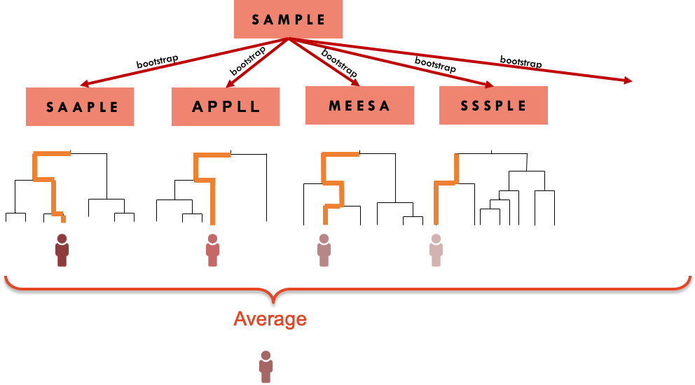
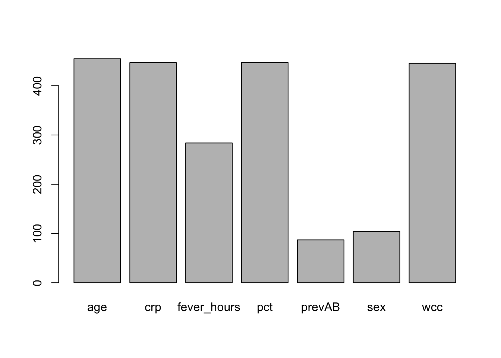
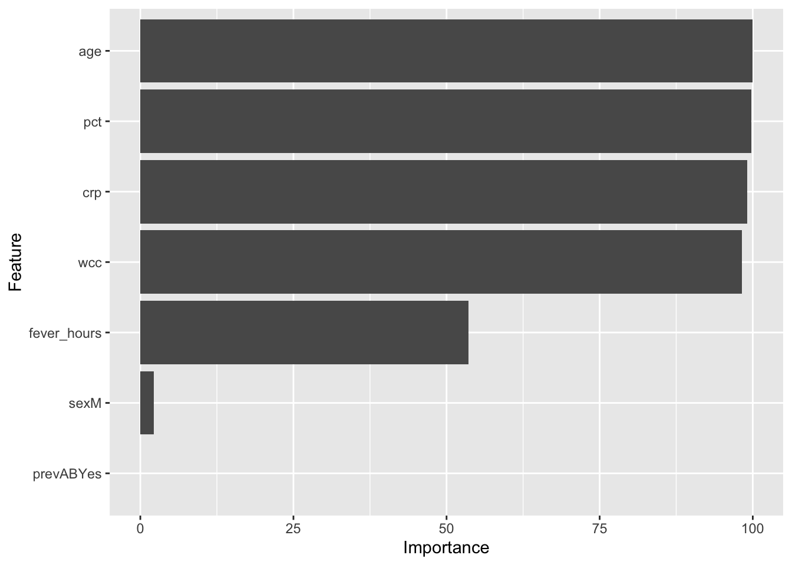

2 Bagging
2.1 Introduction
Trees are quite flexible leading to non biased prediction, and intuitive to interpret. However, they tend to have a high variance, meaning that a small change in the data may result in a different tree.
Bagging is an approach that tries to “stabilise” the predictions from trees. Rather that fitting a single tree to the data, we will bootstrap the data and for each bootstrap sample, we will fit a tree. The final prediction is an average of all the predictions of the trees, if the outcome is continuous, or the class that was most common among the predictions, if the outcome is categorical

The downside of this approach is that we lose the interpretability of a single tree. The result is a prediction from what in machine learning is sometimes referred as a black box method.
We can however use the multiple trees to create a metric of variable importance. The idea is that a variable that appears early in many trees is “more” important than a predictor that consistently appears further down in the trees.
2.3 Practice session
Task 1 - Use bagging to build a classification model
The SBI.csv dataset contains the information of more than 2300 children that attended the emergency services with fever and were tested for serious bacterial infection. The variable sbi has 4 categories: Not Applicable(no infection) / UTI / Pneum / Bact
Create a new variable sbi.bin that identifies if a child was diagnosed or not with serious bacterial infection.
## X id fever_hours age sex wcc prevAB
## Min. : 1.0 Min. : 495 Min. : 0.00 Min. :0.010 Length :2348 Min. : 0.2368 Length :2348
## 1st Qu.: 587.8 1st Qu.:133039 1st Qu.: 24.00 1st Qu.:0.760 N.unique : 2 1st Qu.: 7.9000 N.unique : 2
## Median :1174.5 Median :160016 Median : 48.00 Median :1.525 N.blank : 0 Median :11.6000 N.blank : 0
## Mean :1174.5 Mean :153698 Mean : 80.06 Mean :1.836 Min.nchar: 1 Mean :12.6431 Min.nchar: 2
## 3rd Qu.:1761.2 3rd Qu.:196030 3rd Qu.: 78.00 3rd Qu.:2.752 Max.nchar: 1 3rd Qu.:16.1000 Max.nchar: 3
## Max. :2348.0 Max. :229986 Max. :3360.00 Max. :4.990 Max. :58.7000
## sbi pct crp
## Length :2348 Min. :8.647e-03 Min. : 0.00
## N.unique : 4 1st Qu.:1.600e-01 1st Qu.: 11.83
## N.blank : 0 Median :7.600e-01 Median : 30.97
## Min.nchar: 3 Mean :3.744e+00 Mean : 48.41
## Max.nchar: 13 3rd Qu.:4.620e+00 3rd Qu.: 66.20
## Max. :1.565e+02 Max. :429.90# Create a binary variable based on "sbi"
sbi.data$sbi.bin <- as.factor(ifelse(sbi.data$sbi == "NotApplicable", "NOSBI", "SBI"))
table(sbi.data$sbi, sbi.data$sbi.bin)##
## NOSBI SBI
## Bact 0 34
## NotApplicable 1752 0
## Pneu 0 251
## UTI 0 311Now, let’s using bagging to predict if a child has serious bacterial infection with the perdictors fever_hours, wcc, age, prevAB, pct, and crp.
However, we will leave 200 observations out to test the model. We will
use the bagging() function from the ipred package and fit 100 trees.
library(caret)
library(ipred) #includes the bagging function
library(rpart)
library(psych) # for the kappa statistics
set.seed(1999)
sbi.bag <- bagging(sbi.bin ~ fever_hours+age+sex+wcc+prevAB+pct+crp,
data = sbi.data[-c(500:700),], #not using rows 500 to 700
nbagg=100)We will also fit one single tree to use as a comparison.
sbi.tree <- rpart(sbi.bin ~ fever_hours+age+sex+wcc+prevAB+pct+crp,
data = sbi.data[-c(500:700),], method="class",
control = rpart.control(cp=.001))
printcp(sbi.tree)##
## Classification tree:
## rpart(formula = sbi.bin ~ fever_hours + age + sex + wcc + prevAB +
## pct + crp, data = sbi.data[-c(500:700), ], method = "class",
## control = rpart.control(cp = 0.001))
##
## Variables actually used in tree construction:
## [1] age crp fever_hours pct prevAB sex wcc
##
## Root node error: 499/2147 = 0.23242
##
## n= 2147
##
## CP nsplit rel error xerror xstd
## 1 0.021042 0 1.00000 1.00000 0.039220
## 2 0.018036 2 0.95792 0.98998 0.039083
## 3 0.015030 3 0.93988 0.98597 0.039027
## 4 0.010020 5 0.90982 0.98998 0.039083
## 5 0.008016 7 0.88978 0.96593 0.038745
## 6 0.007014 10 0.86573 0.97595 0.038887
## 7 0.006012 14 0.83166 0.98196 0.038971
## 8 0.004509 17 0.81363 0.98597 0.039027
## 9 0.004008 21 0.79559 0.99198 0.039110
## 10 0.003340 22 0.79158 0.99198 0.039110
## 11 0.003006 27 0.77355 1.01804 0.039464
## 12 0.002672 31 0.76152 1.02004 0.039491
## 13 0.002004 39 0.73747 1.03006 0.039624
## 14 0.001002 54 0.70741 1.10421 0.040558
## 15 0.001000 56 0.70541 1.11623 0.040701We can now compute the confusion matrix for both approaches, using the 200 cases left out from the model fitting.
sbi.test.data <- sbi.data[c(500:700),]
#confusion matrix for 1 tree
table(sbi.test.data$sbi.bin,
predict(sbi.tree, sbi.test.data, type="class"))##
## NOSBI SBI
## NOSBI 94 10
## SBI 88 9## Call: cohen.kappa1(x = x, w = w, n.obs = n.obs, alpha = alpha, levels = levels,
## w.exp = w.exp)
##
## Cohen Kappa and Weighted Kappa correlation coefficients and confidence boundaries
## lower estimate upper
## unweighted kappa -0.087 -0.0035 0.08
## weighted kappa -0.087 -0.0035 0.08
##
## Number of subjects = 201#confusion matrix for bagged trees
table(sbi.test.data$sbi.bin,
predict(sbi.bag, sbi.test.data, type="class"))##
## NOSBI SBI
## NOSBI 95 9
## SBI 78 19## Call: cohen.kappa1(x = x, w = w, n.obs = n.obs, alpha = alpha, levels = levels,
## w.exp = w.exp)
##
## Cohen Kappa and Weighted Kappa correlation coefficients and confidence boundaries
## lower estimate upper
## unweighted kappa -0.0047 0.091 0.19
## weighted kappa -0.0047 0.091 0.19
##
## Number of subjects = 201The bagging improved the prediction ability.
TRY IT YOURSELF:
- Use the
caretpackage to fit the model above with bagging. You can use the entire dataset and compute the cross-validated AUC-ROC and confusion matrix
See the solution code
set.seed(1777)
trctrl <- trainControl(method = "repeatedcv",
number = 10,
classProbs = TRUE,
summaryFunction = twoClassSummary)
bag.sbi <- train(sbi.bin ~ fever_hours+age+sex+wcc+prevAB+pct+crp,
data = sbi.data,
method = "treebag",
trControl = trctrl,
nbagg = 100,
metric="ROC")
bag.sbi
confusionMatrix(bag.sbi)
Task 2 - Compute the variable importance
Let’s compute the variable importance based on the sbi.bag bagging model.
The function varImp() from the caret package, can be applied to the
result of the bagging() function
pred.imp <- varImp(sbi.bag)
pred.imp
#You can also plot the results
barplot(pred.imp$Overall,
names.arg = row.names(pred.imp))
#If you use the caret package
#to fit the model, you can use the ggplot() to create an alternative plot
library(ggplot2)
pred.imp.caret <- varImp(bag.sbi)
ggplot(pred.imp.caret) #This is a standard ggplot object which can be edited in the usual way
2.4 Exercises
Solve the following exercises:
- The dataset SA_heart.csv contains on coronary heart disease status (variable chd) and several risk factors including the cumulative tobacco consumption tobacco, systolic sbp, and age
Build a predictive model by bagging 100 tree to classify chd using tobacco,sbp and age
Find the cross-validated AUC ROC and confusion matrix for the model above and compare them with ones obtained from logistic regression.
Which is the most important predictor?
What is the predicted probability of coronary heart disease for someone with no tobacco consumption, sbp=132 and 45 years old?
- The dataset fev.csv contains the measurements of forced expiratory volume (FEV) tests, evaluating the pulmonary capacity in 654 children and young adults.
Fit a model based on bagging 200 tree to predict fev using age, height and sex.
Plot the variables importance.
Compare the MSE of the model above with a GAM model for fev with sex and smoothing splines for height and age.